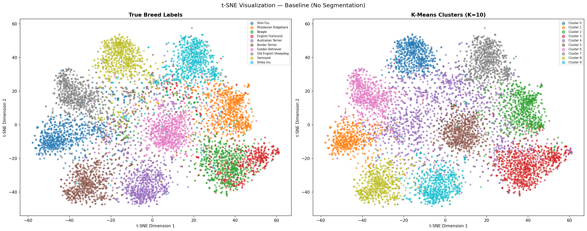
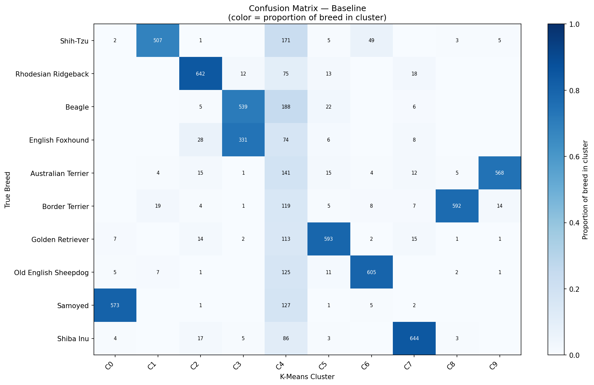
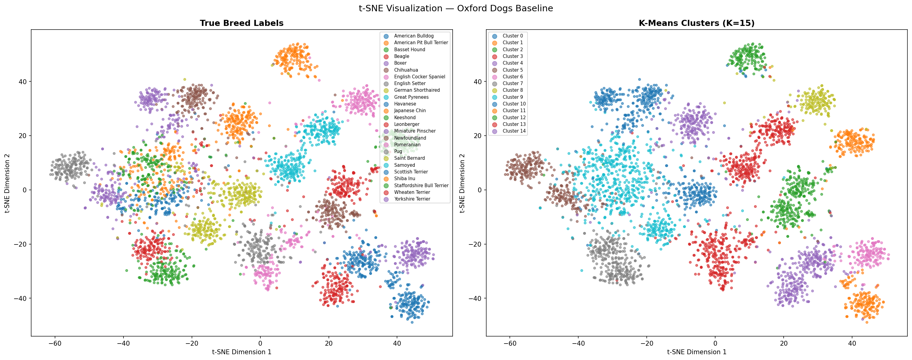
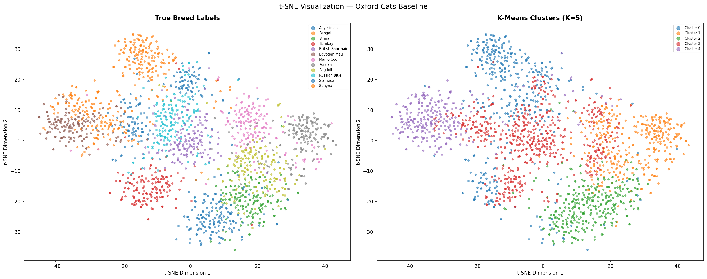

Coarse and Fine Grained Dog Breed Discovery
Dogs come in an enormous range of shapes, sizes, and coat patterns after thousands of years of selective breeding, which makes telling breeds apart a genuinely hard visual problem. This project tests whether a neural network that was never taught breed labels can still learn to group photos by breed on its own, using four pretrained models across four datasets of increasing difficulty.
Motivation and Problem Framing
Recognizing an individual dog breed is hard even for people. Breeds can look similar to each other while photos of the same breed vary widely in pose, lighting, and background. The goal of this project is to see whether a model trained only on general image recognition, with no breed specific training at all, already contains enough visual understanding to group dogs by breed correctly, purely by noticing which photos look most alike.
Dataset Selection
The project moves from an easy coarse case up to two genuinely hard fine grained benchmarks, increasing image resolution and breed count at each step.
CIFAR 10 Dogs
6,000 images at 32 by 32 pixels, one coarse dog class, no breed sub labels. Used for an initial pass, then dropped once it failed. Covered in the next section.
Imagewoof
9,025 images across 10 dog breeds, resized to 224 by 224 pixels, split 80/10/10 with a fixed seed. The primary benchmark for model comparison.
Oxford Dogs
4,978 images across 25 breeds, sourced from Flickr and independent of ImageNet. The hardest and largest breed count tested, and the benchmark used for every robustness experiment.
Oxford Cats
2,371 images across 12 breeds, same Flickr source as Oxford Dogs. Included to test whether the findings generalize beyond dogs to another species.
Pipeline and Feature Extractors
Every image goes through the same process. A pretrained model looks at the photo and produces a list of numbers describing what it sees, without knowing anything about breeds. Those numbers are standardized and compressed, then a clustering algorithm groups similar looking photos together. Only afterward are the results checked against the true breed labels, to see how well the grouping matches reality.
ResNet 18
18 layer residual network with the classification head removed. Produces a 512 dimensional feature vector per image from 11.7 million parameters. Needs no PCA before clustering given its already low dimensionality.
VGG 16
13 convolutional layers plus two fully connected blocks retained, final classifier removed. Produces a 4,096 dimensional vector from 134 million parameters, 8 times larger than ResNet 18, reduced with PCA before clustering.
ViT B/16
Vision Transformer base model, 86 million parameters, producing a 768 dimensional class token. Self attention weighs discriminative regions directly, with no explicit segmentation step required.
ViT L/16
The large Vision Transformer variant, 307 million parameters, producing a 1,024 dimensional class token. Shares the same pretraining as ViT B/16 but with substantially higher representational capacity.
The CIFAR 10 Failure Case
The first attempt used CIFAR 10's dog images as an easy starting point, but the results were poor across the board. Two separate problems were at fault. First, the images are only 32 by 32 pixels, far too coarse to preserve the coat texture and facial detail that actually separate one breed from another, and enlarging the images afterward cannot recover detail that was never captured. Second, CIFAR 10 has no breed labels at all, just one general dog category, so there was no way to check whether any grouping found was actually meaningful.
Baseline Clustering Results
Once the images were large enough and real breed labels existed to check against, both models did genuinely well. ResNet 18 correctly grouped photos into clusters that lined up with true breeds most of the time, and the same held for VGG 16, even though its feature vectors are 8 times larger. Neither model consistently beat the other, which is one of the more interesting findings of the project.




Background Removal Experiment
A natural guess is that clustering would improve if the background were removed first, leaving only the animal. The Segment Anything Model was used to blank out backgrounds with solid black or white fill, and the result was the opposite of what was expected. Every comparison, 18 in total across both models and all three datasets, came out worse than simply leaving the background in.
Lighting Robustness Experiment
Real world photos are not always well lit, so both models were tested under progressively darker conditions. Performance dropped substantially for both species, but dogs were hit much harder than cats. That difference likely comes down to what actually distinguishes each species. Dog breeds are largely told apart by coat color and markings, which fade in low light, while cat breeds depend more on body shape and coat texture, which hold up better when it gets dark.
Architecture Comparison: Vision Transformers
The clearest result in the project came from swapping the feature extractor architecture entirely. Vision Transformers, which process an image differently from the two convolutional networks tested earlier, outperformed both of them by a wide margin. The improvement needed no extra preprocessing and no breed labels. It came from a different way of looking at the image, one that naturally pays more attention to the animal itself and less to the background around it.
Discussion and Limitations
Several constraints limit how far these conclusions generalize, and they are worth stating plainly.
K Means assumes round clusters
K Means expects roughly spherical, evenly sized clusters, an assumption visibly violated by the oversized clusters observed in several experiments. Breeds sharing coat color or body shape get pulled into one oversized cluster. A method such as HDBSCAN or a Gaussian Mixture Model, neither of which assumes round clusters, might recover more of these irregular boundaries.
PCA discarded real signal
Dimensionality reduction used a fixed component count rather than a variance threshold. VGG 16 features retained only 55.13% of variance at 100 components, meaning close to half of the representational signal was thrown away before clustering even began. A higher component count, or an alternative such as UMAP, might preserve more of that structure.
No lighting robustness
The pipeline has no built in tolerance for non standard lighting. Dog clustering quality drops by up to 85% in very dark conditions, which would be a serious failure mode in any setting where lighting cannot be controlled, such as an outdoor camera or a user submitted photo.
Frozen features only
Every model was used as a frozen extractor with no task specific adaptation. Fine tuning even a small part of the network on a breed labeled dataset would likely close much of the remaining gap between the convolutional models and the Vision Transformers.
Key Findings and Future Directions
- Resolution is a hard prerequisite. No model, method, or amount of tuning recovered from CIFAR 10's 32 pixel images. Any dataset below roughly 100 pixels on its shorter side should be expected to fail this entire approach.
- Feature size alone does not drive quality. VGG 16 produces 8 times more features than ResNet 18 per image, yet neither model consistently wins. We learnt that Global average pooling (not dimensionality), shared by both, was the limiting factor.
- Self attention outperforms pooling by a wide margin. ViT B/16 improved on the stronger convolutional model by 50%, using the same frozen pretrained approach and no additional preprocessing.
Future directions
Fine tuning on a small breed labeled set, replacing K Means with density based clustering such as HDBSCAN, adding brightness augmentation during feature extraction, and extending the comparison to domain specific pretrained models are the most promising next steps.
Development approach
Isabella and I used Claude to accelerate implementation and debugging across the experiment pipeline, while we owned every methodology decision, from dataset selection to which robustness experiments to run and how to interpret the results.
Co authored with Isabella Ran at the University of Texas at Dallas.